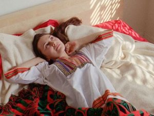

Ouroboros

Basma AlsharifFR / PS / BE / QA 2017
77 min – Arabisch, Englisch
Deutsche Premiere
K: Ben Russell – S: Basma Alsharif
T: Federico Chiari – M: Yann
Gourdon – P+V: momento-films
Mit Diego Marcon, Neemah Abu Ghenas, Jessica Bellinger,
Coleman Collins
Ein Mann
durchstreift den Gaza-Streifen. Von Palästina
gelangt er auf mysteriöse Weise in andere Regionen der Welt:
nach Italien, Los Angeles, in die Kalifornische Wüste und in die
Bretagne. Eine zeitlich losgelöste Reise und Hommage an den
Gaza-Streifen, die gegen die mediale Darstellung des politischen
Traumas aufbegehrt.
sonntag 8 okt 20.30 uhr werkstattkino
Basma Alsharif * 1983 in Kuwait mit palästinensischen Wurzeln. Studium an der School of Art and Design der University of Illinois, Chicago. Sie arbeitet in Kairo, Beirut und Amman. Ihr Interesse gilt dem namenlosen Individuum im Verhältnis zur politischen Geschichte und dem kollektiven Gedächtnis.
basmalsharif.com
Filme Home Movies Gaza 2013 – O, Persecuted 2014 – A Field Guide To Ferns 2015